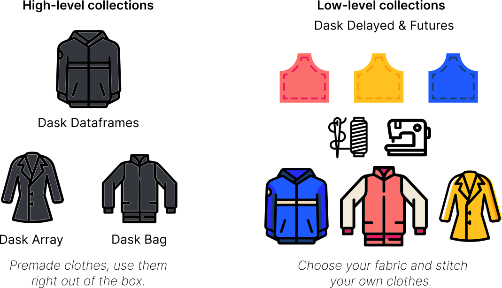
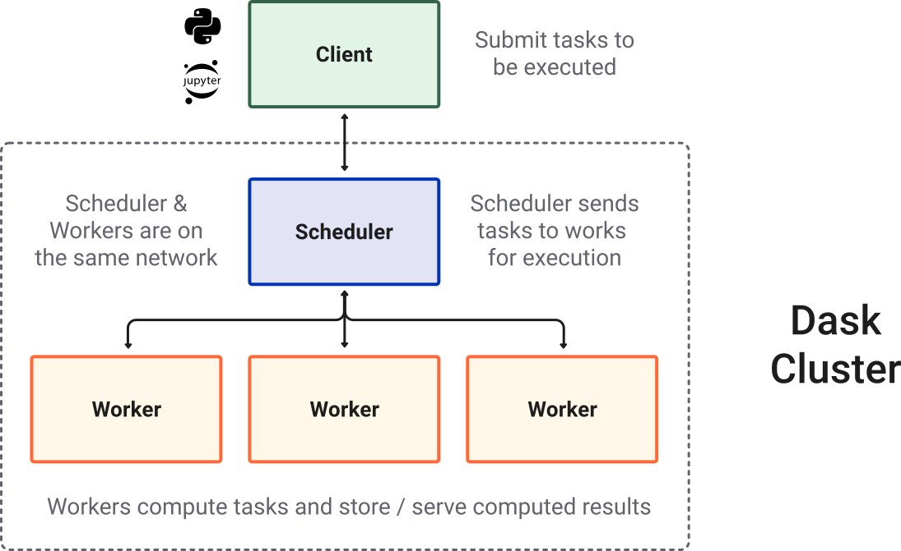

{kind=link}
你可以在 在线实验环境 中运行本 notebook  ，或在 GitHub 上查看源文件。
，或在 GitHub 上查看源文件。
欢迎来到 Dask 教程#

Dask 是一个并行与分布式计算库，用来扩展现有的 Python 和 PyData 生态。
Dask 既能吃满你整台笔记本的算力，也能横向扩展到云上的集群。
一个 Dask 计算示例#
下面几行代码会读取纽约出租车数据，并计算小费的平均值。先不用纠结代码细节，这只是快速演示，下一节会系统讲解。:)
给学习者： 在 Binder 上跑这段可能会比较吃资源。
给讲师： 别忘了打开 Dask Dashboard！
[1]:
import dask.dataframe as dd
from dask.distributed import Client
[2]:
client = Client()
client
[2]:
Client
Client-290d65fc-b25e-11f1-8e50-7ced8dc14072
| Connection method: Cluster object | Cluster type: distributed.LocalCluster |
| Dashboard: http://127.0.0.1:8787/status |
Cluster Info
LocalCluster
df81dea7
| Dashboard: http://127.0.0.1:8787/status | Workers: 4 |
| Total threads: 4 | Total memory: 15.61 GiB |
| Status: running | Using processes: True |
Scheduler Info
Scheduler
Scheduler-e7045361-d2da-40d6-8d6f-cb782822ea43
| Comm: tcp://127.0.0.1:37847 | Workers: 4 |
| Dashboard: http://127.0.0.1:8787/status | Total threads: 4 |
| Started: Just now | Total memory: 15.61 GiB |
Workers
Worker: 0
| Comm: tcp://127.0.0.1:46353 | Total threads: 1 |
| Dashboard: http://127.0.0.1:40051/status | Memory: 3.90 GiB |
| Nanny: tcp://127.0.0.1:33025 | |
| Local directory: /tmp/dask-worker-space/worker-nl73tq6_ | |
Worker: 1
| Comm: tcp://127.0.0.1:35775 | Total threads: 1 |
| Dashboard: http://127.0.0.1:34097/status | Memory: 3.90 GiB |
| Nanny: tcp://127.0.0.1:38885 | |
| Local directory: /tmp/dask-worker-space/worker-hqfangrt | |
Worker: 2
| Comm: tcp://127.0.0.1:43583 | Total threads: 1 |
| Dashboard: http://127.0.0.1:35761/status | Memory: 3.90 GiB |
| Nanny: tcp://127.0.0.1:35793 | |
| Local directory: /tmp/dask-worker-space/worker-9pb0oa3c | |
Worker: 3
| Comm: tcp://127.0.0.1:36893 | Total threads: 1 |
| Dashboard: http://127.0.0.1:35007/status | Memory: 3.90 GiB |
| Nanny: tcp://127.0.0.1:35805 | |
| Local directory: /tmp/dask-worker-space/worker-d0lh9feh | |
[3]:
ddf = dd.read_parquet(
"s3://coiled-data/uber/",
columns=["tips"],
storage_options={"anon": True},
)
[4]:
result = ddf["tips"][ddf["tips"] > 0].mean().compute()
result
[4]:
4.89494135653498
什么是 Dask？#
“Dask” 这个项目包含好几块：
Collections / API，也常被叫做 “core-library”（核心库）。
Distributed —— 用来创建集群
各类集成以及更广泛的生态
Dask 集合（Collections）#
Dask 可以在 大于内存 的数据集上提供 多核 以及 分布式并行 执行。
可以从高阶和低阶两个层次来理解 Dask 的 API（也叫 collections）：

高阶集合： Dask 提供高阶的 Array、Bag 和 DataFrame 集合，它们分别模仿 NumPy、list 和 pandas，但可以在放不进内存的数据集上并行运算。
低阶集合： Dask 还提供低阶的 Delayed 和 Futures 集合，让你更精细地构建自定义的并行与分布式计算。
Dask 集群#
大多数时候使用 Dask，你会用到分布式调度器（distributed scheduler），它运行在 Dask 集群里。集群的结构大致如下：

Dask 生态#
除了核心库和分布式调度器，Dask 生态还连接了不少相关项目，例如：
Dask-ML（并行的、类 scikit-learn 风格 API）
Dask-image
Dask-cuDF
Dask-sql
Dask-snowflake
Dask-mongo
Dask-bigquery
内置了 Dask 集成的社区库，例如：
Xarray
XGBoost
Prefect
Airflow
Dask 的部署相关库：
Dask-kubernetes
Dask-YARN
Dask-gateway
Dask-cloudprovider
jobqueue
……我们谈论 Dask 项目时，通常也会把这些社区努力算进去。
Dask 的应用场景#
Dask 被用在许多领域，例如：
地理空间
金融
天体物理
微生物学
环境科学
可以看看 Dask 的 用例页面，里面有不少示例工作流。
准备工作#
git clone https://github.com/IncubatorShokuhou/dask-tutorial-chinese
然后安装所需软件包。 有三种安装方式，请选择最适合你的一种，并且 只选一种。 按推荐顺序为：
在仓库根目录执行：
conda env create -f binder/environment.yml
conda activate dask-tutorial
你需要以下核心库：
conda install -c conda-forge ipycytoscape jupyterlab python-graphviz matplotlib zarr xarray pooch pyarrow s3fs scipy dask distributed dask-labextension
请注意，这种方式会改动你现有环境，可能升级或降级已经安装的软件包。
教程结构#
每一节都是一个 Jupyter notebook，里面混有文字、代码和练习。
概述 — Dask 在整个生态中的位置。
DataFrame — 对散布在集群上的许多 pandas DataFrame 做并行操作。
Array — 分块的类 NumPy 功能，底层是分布在集群上的许多 numpy 数组。
Delayed — 用单个装饰器并行化一般 Python 代码。
部署 / Distributed — Dask 的集群调度器，以及如何查看仪表盘。
Distributed Futures — 异步计算、非阻塞地拿到结果。
总结
如果你没用过 JupyterLab，它和 Jupyter Notebook 很像。如果你连 Notebook 也没用过，快速入门如下：
有两种模式：命令模式和编辑模式
在命令模式下按
Enter，进入编辑模式（比如现在这个 Markdown 单元格）在编辑模式下按
Esc，回到命令模式按
Shift+Enter运行当前单元格并跳到下一格
工具栏里可以执行、转换和新建单元格。
练习：打印 Hello, world!#
每个 notebook 都会穿插练习。你会先看到一个空白或半成品单元格，后面跟着一个默认折叠的解答单元格。例如：
请打印文本 “Hello, world!”。
[5]:
# 在此编写代码
下一格是参考答案。点击省略号展开解答；一定要运行解答单元格，因为后面的内容可能依赖它的输出。
[6]:
print("Hello, world!")
Hello, world!
有用的链接#
参考
寻求帮助
Stack Overflow 上的
`dask<http://stackoverflow.com/questions/tagged/dask>`__ 标签，适合用法问题GitHub Issues 适合缺陷报告和功能请求
Discourse 论坛 适合一般讨论（非缺陷）
参加现场教程